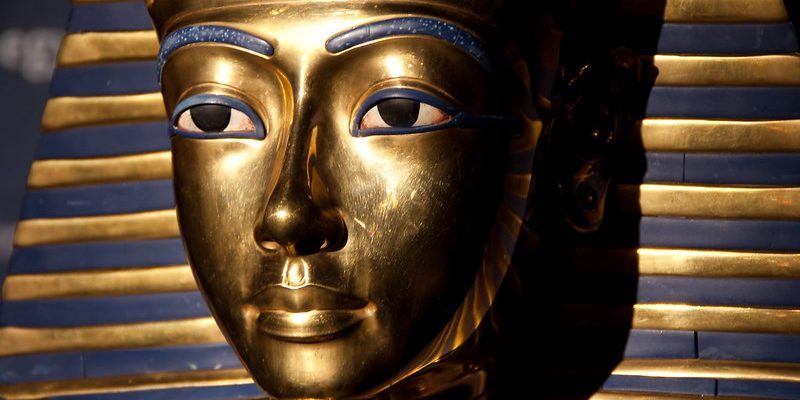
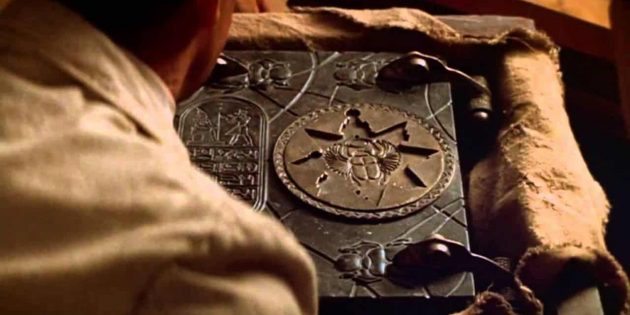
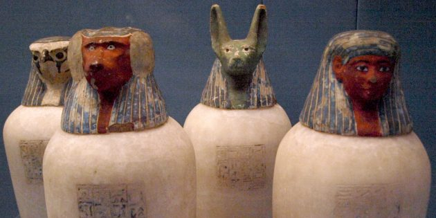
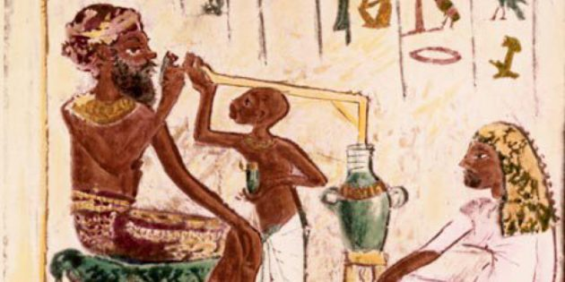
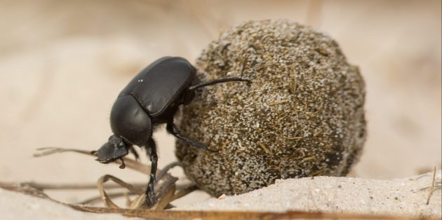
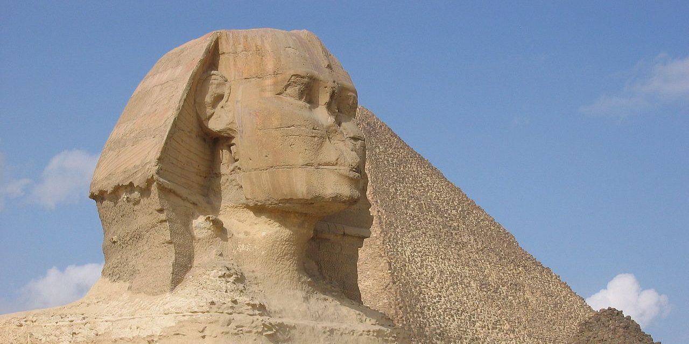
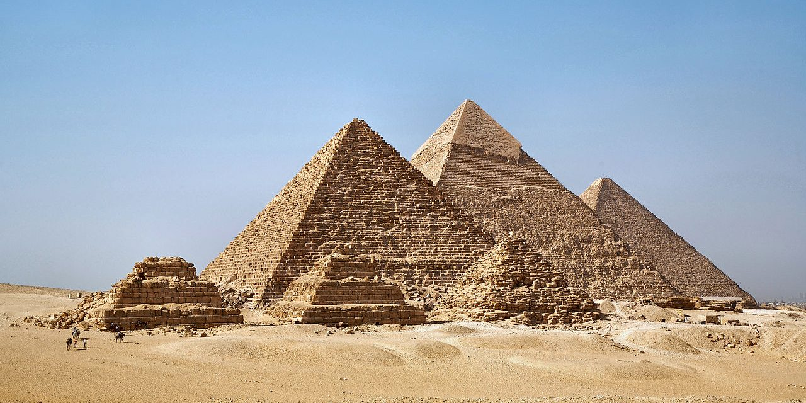

1. Вошедшие в пирамиду учёные непременно умирают от проклятия
Когда на днях в Египте обнаружили целый некрополь с 59 саркофагами, интернет заполнили комментарии вроде:
«Не трогайте! Закопайте обратно» Потому что в массовой культуре мумии ассоциируются со страшными
проклятиями, убивающими всех потревоживших сон фараонов, болезнями и прочими карами прямо из подземного
мира.Такую репутацию египетские мумии получили после того, как 6 ноября 1922 года англичане, египтолог Говард
Картер и коллекционер Джордж Карнарвон, после шестилетних поисков обнаружили гробницу Тутанхамона .
После вскрытия мавзолея члены экспедиции — по разным подсчётам от 13 до 22 человек, в том числе и лорд Карнарвон — умерли один за другим. Газеты раструбили об этом на весь мир:
проклятие фараона покарало наглецов,осквернивших его последнее пристанище! Правда, если взглянуть на список
умерших, то можно заметить, что многие из них были весьма преклонного возраста: средняя продолжительность их
жизни составила 74,4 года. Причём Говард Картер, руководивший раскопками, умер последним, в 1939 году в возрасте
64 лет от лимфомы — ни таинственных укусов насекомыми, ни древних вирусов, ничего такого. И да, проклятий на
головы тех, кто посмеет потревожить мумии фараонов, египтяне не насылалиCurse of the pharaohs. У них попросту не
было самого понятия проклятие. В крайнем случае на стенах гробниц писалиCurse of the pharaohs вещи в духе: «Пусть
у любого правителя, который причинит зло или вред этому гробу, бог Хемен не принимает никаких даров, и пусть его
потомки не унаследуют от него ничего». Или «Всех людей, что войдут в мою могилу, ждёт суд, и им будет положен
конец. Я схвачу вора за шею, как птицу. Я вселю в него страх передо мной». Не сильно помогает от грабителей, правда?
2. «Книга мёртвых» — пособие по египетской некромантии
В отличие от зловещего подобия «Некрономикона», показанного в фильме «Мумия» (тот том настолько ужасен, что
запирается на ключ), настоящая The Egyptian Book of the Dead «Книга мёртвых» — это сборник погребальных
песнопений и руководств по изготовлению мумий. Также там указывается, как усопшему вести себя в мире мёртвых,
чтобы боги Анубис, Осирис и Маат были к нему благосклонны, и как дойти до суда богов в целости и сохранности,
избежав потусторонних опасностей. Поэтому этот сборник папирусов ещё именуется «Книга грядущего дня» или
«Книга мёртвых». Ещё «Книга мёртвых» содержала нравственные наставления о том, как себя следует вести, чтобы
боги были довольны. Так что это ещё и список моральных заповедей. А вот заклинаний для оживления мумий и
насылания проклятий там, к сожалению, нет.
3. Мумифицировали только фараонов и знать
Считается, что чести стать мумией, замурованной в саркофаге, удостаивались только египетские цари, максимум —
их приближённые. Но это совсем не так. В Древнем Египте считалось что мумифицировать человека — значит
обеспечить ему вечную жизнь на Полях Иалу (нечто вроде египетского рая), где он сможет пользоваться всем, что при
погребении положили ему в гробницу. Именно поэтому у фараонов столько дорогого барахла рядом с саркофагами —
хотели и там жить на широкую ногу. Но мумифицировались не только цари и вельможи, а вообще все, кто хоть как-то
надеялся на перерождение. Разве что бедняки вместо строительства пирамиды и каменных саркофагов выбирали
простые захоронения и деревянные ящики. Существовало три способа мумификации — их описал Геродот. Первый
называется «самым совершенным» — он предназначался для солидных господ вроде фараонов. Все органы вынимали и
складывали в специальные сосуды (канопы), мозг вытаскивали через нос крючками, а тело обрабатывали пальмовым
вином, настоем из измельчённых ароматных трав и специй, включая мирру и кассию, и помещали в соль на 70 дней.
Дорогое развлечение для богатеньких. Второй способ подешевле, для среднего класса. Масло, полученное из кедрового
дерева, вводилось шприцем в брюшную полость будущей мумии. Чтобы не протекло, использовали ректальную пробку.
Органы вынимать не приходилось: масло приводило к их разжижению без постороннего вмешательства, а заодно и
брюшную полость дезинфицировало. Когда тело назревало, пробку вынимали, и внутренности вытекали через задний
проход. Дальше преставившегося также клали в соль на 70 дней.
И третий способ — бюджетный. В кишечник вводили
специальный раствор, чтобы убить находящихся там бактерий и остановить разложение. И сразу отправляли тело в соль
— дёшево и сердито. Кроме того, Геродот упоминает, что сразу отдавать усопшего бальзамировщикам было не принято.
Во избежание различных казусов.
Тела жён знатных людей отдают бальзамировать не сразу после кончины, точно так же
как и тела красивых и вообще уважаемых женщин. Их передают только через три или четыре дня.
Так поступают для того, чтобы бальзамировщики не совокуплялись с ними.
За компанию с умершим могли забальзамировать его любимую кошку,
собаку, птичку или целого крокодила.
4. Типичные фараоны и жрецы — загорелые полуобнажённые атлеты
Если вы посмотрите какой-нибудь фильм о Древнем Египте, то заметите, какими изображаются фараоны и их вельможи в
современной культуре. Все как на подбор: красивые, мускулистые и подтянутые молодые люди со смуглой кожей, лоснящейся
от масла. И царицы им под стать — смуглые черноволосые и темноглазые красотки. Но на самом деле египетские цари с
приближёнными — во всяком случае, многие из них — не были столь уж привлекательными. Диета фараонов в основном
состояла из пива, вина, мяса, хлеба и мёда и была очень богата сахаром. Исследования мумий
показывают, что многие
египетские правители имели избыточный вес, страдали диабетом и вообще были не самыми здоровыми
людьми. Однако
ожирение служило поводом для гордости, а не стеснения.
Иногда высокопоставленных сановников Египта изображали со
складками жира: это считалось признаком успеха, ведь такие люди могли много есть и не заниматься физическим трудом.
Взять,
например, знаменитую царицу Хатшепсут. Статуи изображают её изящной и стройной молодой красавицей. Однако умерла она,
будучи женщиной лет 50, страдающей от облысения, сильного ожирения, диабета и кариеса. Зато с готичным чёрным маникюром.
5. Египтяне курили табак до открытия Америки
Как известно, табак до XVI века рос только в Северной и Южной Америке, точно так же, как и кока. Тем не менее в
интернете
можно найти пару занимательных фактов. В 1976 году палеоботаник Мишель Леско обнаружил в брюшной полости мумии
Рамзеса II частицы никотина. А в 1992 году токсиколог Светлана Балабанова якобы нашла следы кокаина, гашиша и никотина
на волосах мумии жрицы Хенуттауи, а также нескольких других мумий из того же музея.Египтяне и правда занимались
судоходством, но в Америке не бывали — они всё больше плавали по Нилу и у берегов Африки. Повторные исследования
мумии Хенуттауи ни кокаина, ни гашиша в ней не обнаружили, так что эта «находка» была либо ошибкой,
либо мистификацией.
А вот никотин в мумиях действительно имеется. Видимо, он попал в них при бальзамировании. Египтяне знали и использовали
такие растения, как индийский женьшень и сельдерей пахучий — они тоже содержат никотин, хоть и не в таких количествах,
как табак. Так что нет, египтяне не курили. Зато пили очень, очень много пива. И проводили религиозные церемонии и фестивали
в честь Бастет, Хатора и Сехмета, основательно напившись. И не стеснялись документировать этот факт. Так, на фреске в одной
из египетских гробниц была изображена женщина, которую рвало от чересчур обильных возлияний. При этом, судя по
сопровождающим надписям, она просила ещё 18 чашек вина, потому что горло её стало «сухим как солома». Учёным даже
удалось найти древнеегипетские пивные дрожжи, захороненные в очередной гробнице. Они выжили, хоть минули тысячелетия
с тех пор, как их поместили в кувшин. Их удалось культивировать и сварить пиво по рецепту, заботливо записанному египтянами.
Получился напиток светлого цвета, шипучий, выглядящий почти как вино и вполне неплохой на вкус.
Видимо, египтяне в прямом
смысле открыли Америку лет эдак за 2 800 до плаванья Колумба. Или нет?
6. Скарабеи невероятно опасны
В Древнем Египте жук-скарабей был священным. Он символизировал жизнь после смерти и воскресения и ассоциировался с
Солнцем. Бог-скарабей Хепри, по представлениям египтян, катал по небу Солнце, как его земные собратья катают шарики из навоза.
В фильме «Мумия» скарабеи служили хранителями древних гробниц. Именно с ними заживо похоронили главного злодея.
Насекомые ордами набрасывались на людей и пожирали их за секунды, а в одной особенно неприятной сцене жук заполз герою под
кожу, и его пришлось вырезать ножом. Но на самом деле скарабеи питаютсянавозом крупного рогатого скота и лошадей, а людей
при всём желании не могут есть и даже кусать. Так что кожу с вас эти жуки точно не сдерут.
7. Пирамиды наполнены хитроумными ловушками
Вот ещё одна деталь о пирамидах, которая часто встречается в кино, — там полно ловушек. Какую-нибудь искательницу
сокровищ вроде
Лары Крофт в гробницах фараонов непременно ждут всякие неприятные сюрпризы. Например, серная кислота под давлением,
распыляющаяся на кожу, обваливающийся потолок или пол, камеры, затопляемые водой, или скрытые в стенах арбалеты, стреляющие
копьями. Ни ловушек, ни ям со змеями, пауками, крокодилами и скарабеями-людоедами (как бы они выживали в гробнице тысячелетиями),
ни вырывающихся кольев и летающих стрел (арбалеты тогда ещё не придумали), ни других голливудских штуковин. Египтяне просто
замуровывали пирамиду камнями, и всё. А ещё иногда они делали рядом с настоящей камерой захоронения ещё одну, поддельную,
которая выглядит так, будто её уже обчистили. Незадачливый грабитель думал, что пирамиду кто-то обнёс до него, и уходил несолоно
хлебавши. Вот и вся охранная система.
8. Нос сфинкса отстрелили солдаты Наполеона
Если вы взглянете на сфинкса, каменную статую с телом льва и головой человека, то заметите, что у него нет значительной части носа.
Существует популярная легенда, что солдаты Наполеона во время французской кампании в Египте использовали монумент как
мишень для тренировок по огневой подготовке и отстрелили ему нос. Другая версия: нос отбили пушечным ядром во время
перестрелки с турками. Однако это не более чем байка: нос отвалился гораздо раньше. Точно невозможно сказать, когда, но на
рисунках датского путешественника Луи Нордена, сделанных в 1755 году, Сфинкс уже запечатлён без него. Наполеон же родился в
1769 году, так что он точно не при делах.
9. Царица Клеопатра была красавицей-египтянкой
сли спросить кого-нибудь, кто самая известная египтянка на свете, наверняка будет названо имя Клеопатры. Это была
последняя царица
Египта, славившаяся своей красотой, и её образ легко представит любой, кто видел фильм про Астерикса и Обеликса. Клеопатра не
была египтянкой — она была гречанкой из династии Птолемеев и управляла Египтом на закате его эллинистической эпохи. Как
ослепительную красотку Клеопатру живописал Плутарх, который её видел только на портретах. Бюсты же, которые с неё ваяли,
показывали, что у неё весьма заурядная внешность и характерный для рода
Птолемеев нос с горбинкой. Зато она говорила на множестве
языков и была довольно обаятельной.
10. Пирамиды построили инопланетяне
Никаких инопланетных технологий, не соответствовавших своему времени, египтяне не использовали. Для постройки этих
громадин
им вполне хватало известняковых карьеров, зубил и кирок из меди и кремня, а также кварцевого песка для
полировки готовых блоков.
Вес камней, из которых сложены пирамиды, составляет в среднем 1,5–2,5 тонны, и
транспортировать их от каменоломни к местам
строительства — вполне посильная задача. У египтян были для этого и неплохие дороги, и деревянные волокуши. Так что летающие
тарелки были им без надобности. Ещё пара интересных фактов о пирамидах: их строили не рабы, а свободные граждане за плату. Если
они не получали оную, то
устраивали забастовки, и фараону приходилось раскошеливаться. А ещё свежепостроенные пирамиды не
были такими желтоватыми от песка, как сейчас. Они были белыми или кремовыми, о чём мы уже как-то писали.